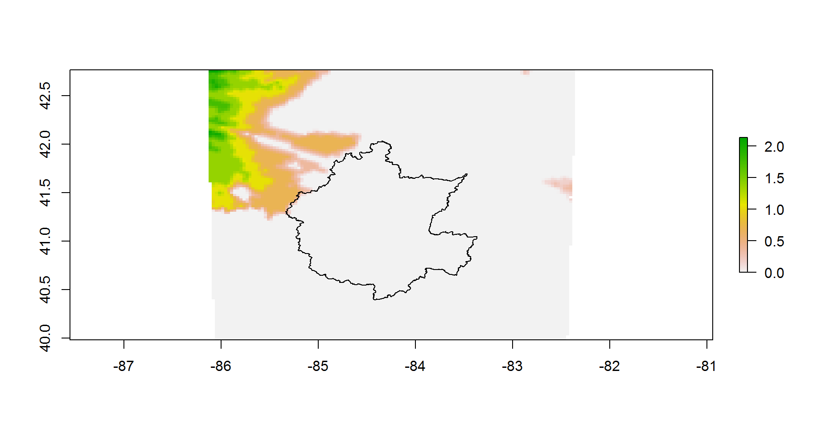

The script shows a R example of geospatial masking in the Maumee River basin, plotting precipitation of a gridded Lambert netCDF file with a watershed in polygon shapefile on Google Map.
xlib <- c("tidyverse","ncdf4","raster", "ggmap", "rgdal", "rgeos")
lib <- lapply(xlib, library, character.only = TRUE) # load the required packagesgeoFile <- "P:/ipemf/wrf/HydroMaumee/geo_em.d02.nc"
fname <- paste0("P:/ipemf/wrf/HydroMaumee/Precip/", "201401010000.PRECIP_FORCING.nc")
fnc <- nc_open(fname)lon <- ncvar_get(fnc, varid = "lon")
lat <- ncvar_get(fnc, varid = "lat")
# get varaible precipitation rate
PR <- ncvar_get(fnc, varid = "precip_rate")library(rwrfhydro)
proj4 <- GetProj(geoFile) spPR <- data.frame(lon = as.vector(lon), lat = as.vector(lat), conc = as.vector(PR))
coordinates(spPR) <- ~ lon+lat
proj4string(spPR) = CRS(proj4)r <- raster(ncols = ncol(lat),nrows = nrow(lat))
extent(r) <- extent(spPR)
rPR <- rasterize(coordinates(spPR), r, spPR$conc)rMaumee <- readOGR(dsn = "P:/ipemf/wrf/HydroMaumee/MaumeeRiverShapefile", layer = "Maumee_Output")## OGR data source with driver: ESRI Shapefile
## Source: "P:/ipemf/wrf/HydroMaumee/MaumeeRiverShapefile", layer: "Maumee_Output"
## with 1 features
## It has 35 fields
## Integer64 fields read as strings: OBJECTID GLHDID HydroID COMID WBAREACOMI FCODE GNIS_NBR STRAHLER SHREVErMaumee.proj <- spTransform(rMaumee, CRSobj = CRS(proj4string(rPR)))#par(mar = c(0.1, 0.1, 0.1, 0.1 ))
plot(rPR*1e4, asp = 1)
plot(rMaumee.proj, add = T) ### Raster to Polygon
r <- projectRaster(rPR, crs = CRS("+proj=longlat +ellps=WGS84 +datum=WGS84 +no_defs"))
rtp <- rasterToPolygons(r)bm <- ggmap(get_map(location = bbox(rtp)))
bm + geom_polygon(data = rtp,
aes(x = long, y = lat, group = group,
fill = rep(rtp$layer*1e4, each = 5)),
size = 0,
alpha = 0.5) +
scale_fill_gradientn(expression("PR\n"~10^{-4}),
colors = topo.colors(255)) Copyright © 2018 Chuliang Xiao.